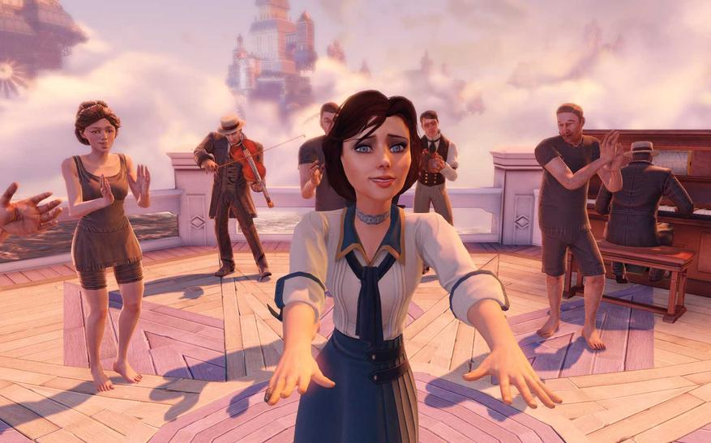
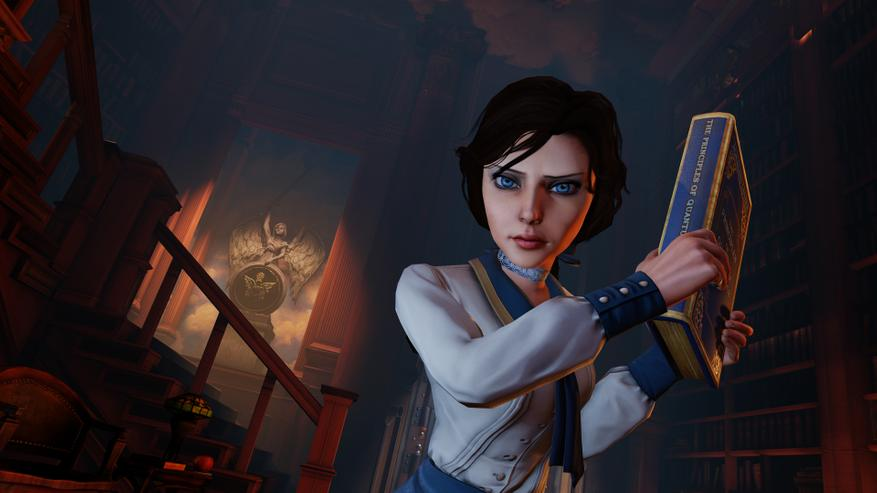

На релизе новенький Bioshock:Infinite (2013) смог удивить многих, удивил бюджетом разработки, превысившим $100 миллионов, на тот момент неслыханные деньги для одиночных шутеров, редко какой поднимался выше пары-тройки десятков. Топы конечно подбирались к этим размерам (Battlefield 4 — 100$М, Grand Theft Auto V — 250$М, Watch Dogs 1 — 70$M). Удивил не суперпродвинутыми технологиями, которые сжигали видяху (игра была сделана движке прошлой игры серии) — хотя картинка превосходная, даже на фоне вышедших топов. Не смесью жанров всего и вся, по сути игра стала намного более линейной, ближе к идеям первой части, чем сама первая часть. Игра удивляла показанной историей, богато поданной, по-настоящему захватывающей до последнего поворота сюжета, который может сравниться по стилю подачи с лучшими книгами, за каждой открытой дверью, как за перевернутой страницей рисуя живой мир с яркими хорошо прописанными и вписанными в геймплей образами, резкими, отталкивающими но запоминающимися персонажами. Сюжетными твистами в декорациях Диснейленда, скрывающего за красивым фасадом дом ужасов.
Перепроходил по двум причинам, интересно было посмотреть порт на switch — шелезяка очень слабенькая в плане производительности, на уровне 6-7 iphone. Еще интересно было освежить в памяти приемы взаимодействия с игроком посредством визуальных образов и функциональности объектов от мастера двойных смыслов Кена Левина. Как говорят ещё «поднять наигранность», хотя, наверное тут уже надо говорить «освежить». Может кому из коллег в игрострое будет тоже интересно, а читателю еще немного рассказать о закулисье создания игр, игровом дизайне, важности психологии в играх, управления игроком и ломания пятой стены.
Совокупность мелких, продуманных игровых деталей, внимания к окружению, взаимодействия с игроком на грани пятой стены, чего так не хватает современным иммерсив симам и которые бы могли многое подсмотреть в технологиях игры десятилетней давности. Но нет, толи гордость не позволяет копировать, толи знания настолько сложны, что современные дизайнеры в силах их воспроизвести. С громадным удовольствием перепрошёл игру сначала на ютубе, а потом на nintendo switch — это однозначно лучший биошок на данный момент, надеюсь ребята хотя бы не запорят следующую часть. А могут и запороть, игру почти сняли с позднего этапа продакшена из-за проблем с финансированием, растеряв по пути всю старую команду.
Принцип наглядности
Примеры действий, который игрок видит в процессе игры, лучше всего работают на атмосферу и сюжет, даже если просто выдать игроку пушку и набор возможностей. Игроку показывают NPC, который использует такую-же механику, которую предполагается использовать и ему, не показывая при этом особенностей и ограничений. Механика, предмет, или способность становится инструментом для решения задач, каким способом игрок применит этот инструмент зависит только от него. При этом сам процесс исследования ограничений становится миниигрой в игре. «Небесный крюк», которым главный герой цепляется к рельсу, служит также отличным оружием ближнего боя, которым к тому же можно красиво добить врага — свернуть ему шею или вовсе её отпилить.
При этом вам просто выдают этот крюк, и в паре катсцен в следующие пару минут показывают как он работает, никаких всплывающих сообщений и отдельных кнопок, как выглядит так и работает. И надо отметить, что в биошоке большинство предметов как выглядят, так и работают. Но если вы будете пытаться применить их по другому, игра не будет вам в этом препятствовать.

Зачастую разработчики просто показывают как работает та или иная механика, но не дают никаких пояснений, относительно её возникновения. Этот прием довольно часто встречается в играх, но мало где хорошо вписан в общее повествование. Надо отдать должно авторам биошока, у них это получилось сделать для всего набора.
Первое взаимодействие с огненной способностью (fire vigor)
Видеоклип доступен в оригинале статьи на Habr.
При этом разработчики не забыли настроить взаимодействия между разными способностями, как например вода гасит огонь. И если попробовать бросить файрбол в болото, то он просто потухнет, а если будет на сухой поверхности, то взорвется. И все эти взаимодействия оставляют для игрока, вместо того, чтобы словами или картинками объяснять суть того или иного взаимодействия часто используют небольшие батл арены и минибоссов. А если любопытный игрок пойдет посмотреть, куда же делся его файрбол, то увидит, что тот еще догорает.

Как правило, такие боссы требуют использования конкретной способности, но никто не мешает игроку просто добить их из оружия. Однако использования окружения и минибоссов для такого прозрачного обучения многими считается одной из фишек игры. Для дизайнера это же сущая пытка, потому что локация получается уникальная, повторять её в игре придется не часто, а времени надо вложить как в треть уровня.
Взаимодействие воды и огня
Видеоклип доступен в оригинале статьи на Habr.
Управление вниманием (фиксированный нарратив)
Фиксированный нарратив — это заранее подготовленные моменты, возникающие во время игры или в промежутках между его саблокациями. Они могут представлять собой катсцены, интерактивные вещи вроде листов с текстами, закадровые разговоры или монологи, повествование через окружение.
Несмотря на то, что эта игра — это линейный почти корридорный шутер, без возможности серьезно влиять на концовку. Механизмы удержания внимания игрока были заложены еще в первой части, это как и широко известные приемы вроде frame объектов и подсветки голден паса.

Так и новые на тот момент «функциональные указатели». Это небольшие катсцены или фрозен стори, которые не направляют явно игрока к нужной точке или действию, но привлекают его внимание. И в Bioshock Infinite такими сценками усыпаны все локации, вы практические не увидите явных указателей в виде надписей. Все что можно было сделать без надписей и явных указателей, вынесено в отдельные игровые ивенты и катсцены. Это очень большой труд и значительные временные затраты. Если перерисовать текстуру, переставить и настроить объект на сцене занимает условно день, то подготовить катсцену, реплики, движения моделей и сами модели — смело умножайте затраченное время на десять.


Визуализация как-бы выбора (эмергентный нарратив)
Эмергентные сцены — события и решения, которые могут сильно отличаться в зависимости от выбора игрока. Фиксированный и эмергентный нарратив составляют собой игровой нарратив, который существует как причудливый сплав повествовательных, случайных и трансфомативных событий (которые не были предусмотрены разработчиками). В силу интерактивной природы самой игры и случайного поведения пользователей игровые дизайнеры не имеют полного контроля над тем, как будет формироваться сюжет.
Понравилось решение со встроенным интерфейсом выбора решений. Игре, которая за фасадом, линейный шутер, аля «убей всех врагов и получи новую способность, чтобы убить еще больше врагов, чтобы получить…» ну вы поняли, получается показывать ситуации и локации, вроде приятной прогулки по раскрашенному во все цвета городу, где вам нужно принять решение. Это было необычно. Если бы не одно большое НО, никакой ваш выбор не влияет ни на что в игре. Как и все игры Левина, эта имеет не просто двойной, а порою и тройной смысл.
Игры приучили нас делать выбор, видимый или нет, измеримый в конце прохождения или влияющий прямо сейчас. Мы ожидаем что большинство игр используют выбор для определения концовок, что и делает игру имеющей смысл, дает игроку возможность влиять на события. Здесь же игра, ставит нас перед ситуациями, которые действительно выглядят моральный выбор, способный повлиять на добрую или злую концовку, так принято у других. Но не здесь, при большинстве таких ситуаций никакого влияния на игру не было, игрок такая же пешка в игре как и стоящий рядом NPC, осознание этого факта приходит в конце. Это вообще ставит под сомнению идею о значимости выбора в этой конкретной игре, и вообще в играх, ломает ту самую пятую стену и показывает, что игроками тоже можно играть.
Дизайнеры отлично знают про симметричные сцены, еще им также известно, что большинство людей правши, поэтому интуитивно будут выбирать предметы, расположенные в левой части экрана. Кстати цифры на ценниках пишут слева по этой же причине, чтобы не давать вашему мозгу мелкой возможности отказаться от покупки. Кстати, если вы будете пацифистом, не убивая совсем уж всех встречных подряд, то лопатки не будет.

Так вот в левой части, которую захотят выбрать большая часть людей, находится неудобный выбор. Клетка, которая символизирует весь этот летающий город, из которого мы пытаемся выбраться, там же находится и предупреждение о последствиях выбора, в виде недостающего мизинца.
Игра, которая в двух частях учила нас важности выбора, разрушает эти ожидания, лишая игрока влияния на что либо, и здесь проявляется третий смысл, о чем в одном из интервью и рассказал сам Левин — может ли моральный выбор вообще быть в играх с нарративом, предопределённым дизайнером? И вот тут поднимается совсем уже странный вопрос: самостоятельная ли сущность сам игрок, а его решения и выборы, или он лишь еще один NPC c большими возможностями к игровому взаимодействию, но все равно управляемо танцующий под чутким руководством геймдизайнера.
Хотя может это все просто слишком перемудрено и дизайнеры просто поленились написать разные варианты концовок?
Неслучайные случайности (трансфомативный нарратив)
Трансформативный нарратив — это концепция, которая описывает процесс взаимодействия механик, который не был изначально заложен разработчиками. Этот термин используется в различных контекстах для описания возможного поведения NPC и объектов и их реакции на различные события, например взрыв привел к падению бочки, которая повредила NPC, вроде бы игрок и не причем, но они должны отреагировать в соответствии с заложенными условиями. В основе трансформативного нарратива лежит идея, что истории могут существенно влиять друг на друга, порождая новые истории.
Дополнительные активности с поиском улучшений, карнавальными играми, исследованием мусорок Колумбии, незаметно для самого игрока передвигают его от одной точки интереса к другой. Раскладывая небольшими порциями простейшие активности, дизайнеры создают ощущение того, что игрок совершенно случайно нашел какие-то вещи сам.

И каждый игрок будет рассказывать свою историю, с уникальными боевыми ситуациями, которые зависят от конкретной стратегии. А кто-то не сможет прокатиться на карусели Солдатского Поля и потеряет часть контента. Это все те самые условия, о которых дизайнеры постоянно заботятся, чтобы «миллионы миров, разных и одинаковых» историй Bioshock сложились в единственное уникальное для каждого игрока прохождение. Не в этом биошоке, как оказалось. Тогда как другие игры всеми силами стараются показать уникальные реакции на действия игрока и сделать его выбор значимым, Infinite просто высмеивает все эти задумки, ставя игрока на один уровень с NPC, беспомощным перед сюжетом и финальной развязкой, она одна, никакие ваши выборы ни на что не влияют.
Двойной/тройной слой повествования
Больше всего меня поразила сложность структуры повествования истории в целом, а она не только в роликах и катсценах. Вся окружающая картинка «прогрессивной» Колумбии это просто декорации, стоит только зайти в подворотню. Расписанные дирижабли лятят по небу, радостные дети бегают по пляжу, фестиваль играет всеми красками. И тут же за поворотом религиозный фанатизм, диалоги о колумбийской, читай американской, исключительности, неизбежность экономического неравенства и постколониальная теория в диалогах. В общем все как в качественной антитутопии, а что вы еще ждали от Левина? Узнаете цифры?

Итого
Казалось бы в линейном шутере должно быть продумано всё до мелочей — начиная от визуального дизайна персонажей, интерактивных объектов и заканчивая многослойной структурой сюжетного мира. Это не только симуляция, которая живёт по своим правилам, но и фасад для двойного и тройного смысла. А богатая вариативность взаимодействий с окружающим миром вдруг становится возможностью сломать пятую стену между игроком и дизайнером. Думаю игра будет хорошим примером для дизайнеров, которые хотят делать игры, которые выбиваются из потока одинаковых однотипных стрелялок на вечер. Десять лет просто вечность для игры, тем важнее пересматривать хорошие решения, чтобы не допускать ошибок в своих проектах.
Еще скриншотов для ностальжи


